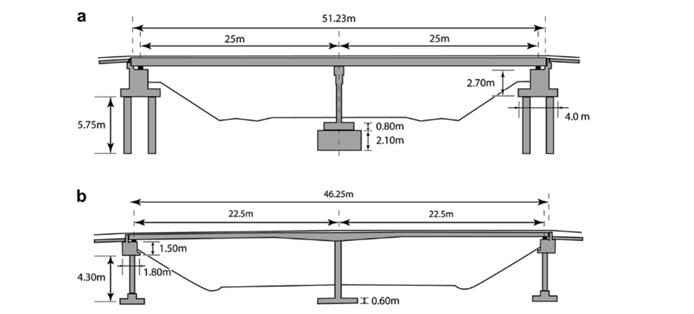
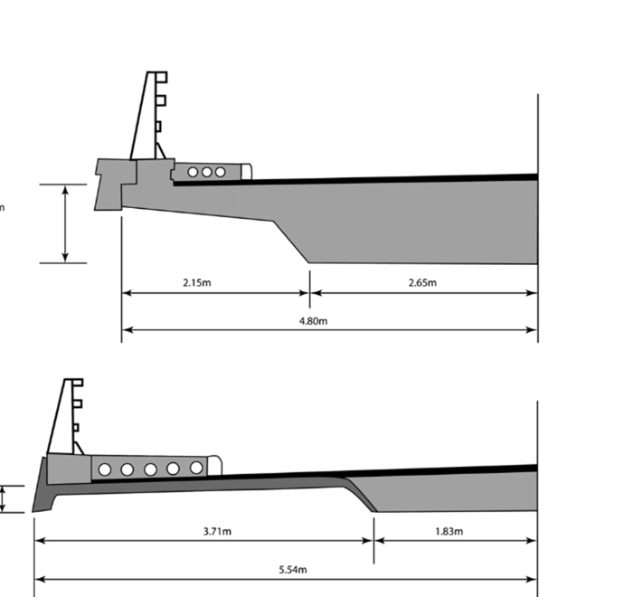
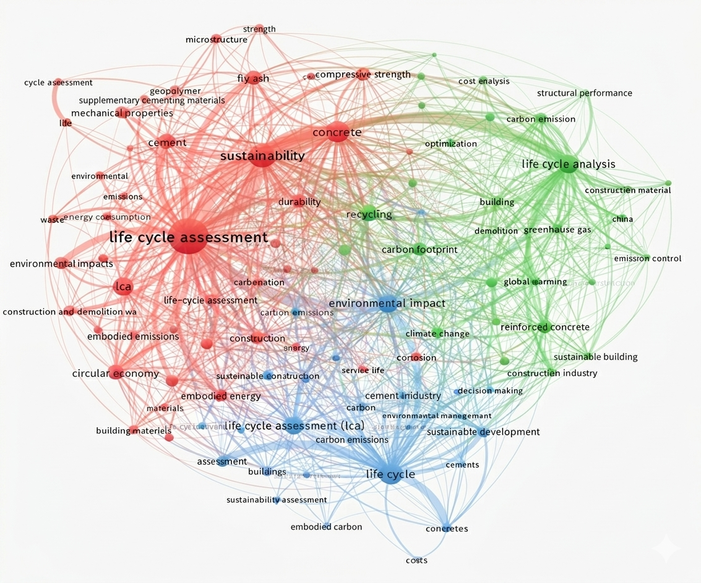
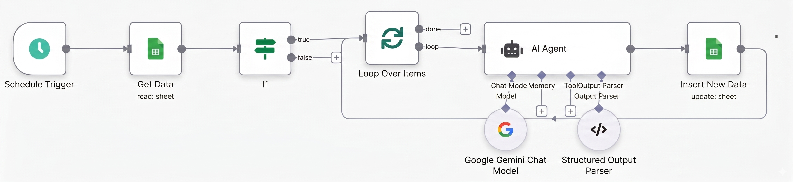
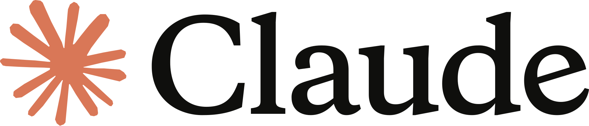
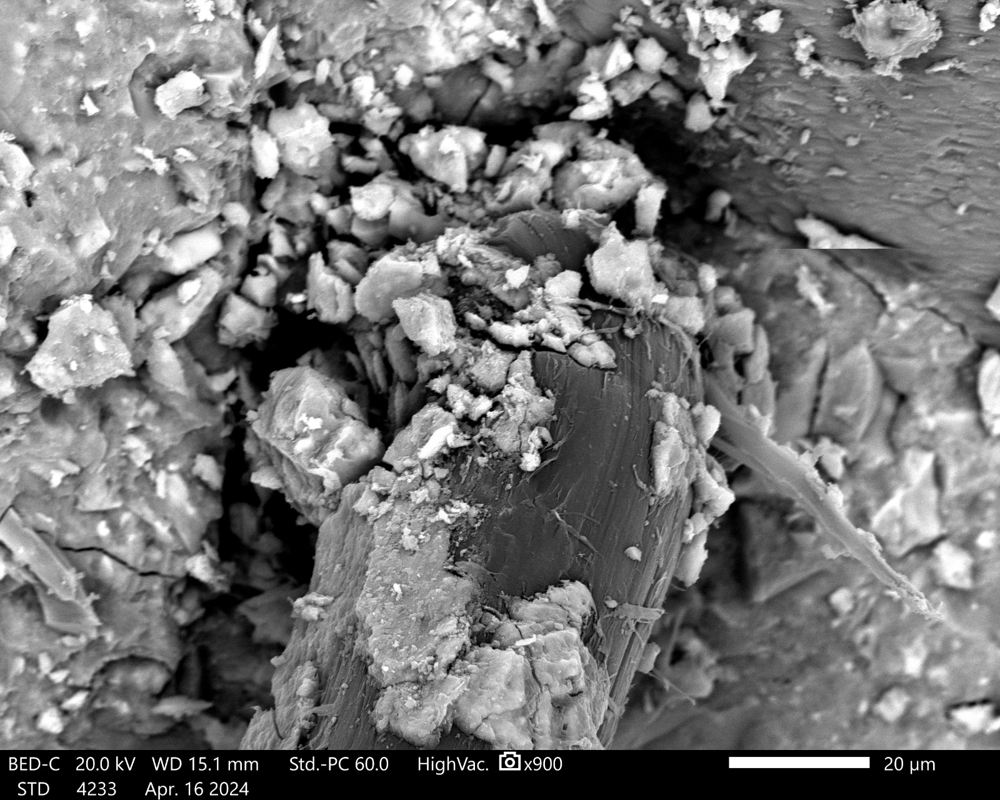
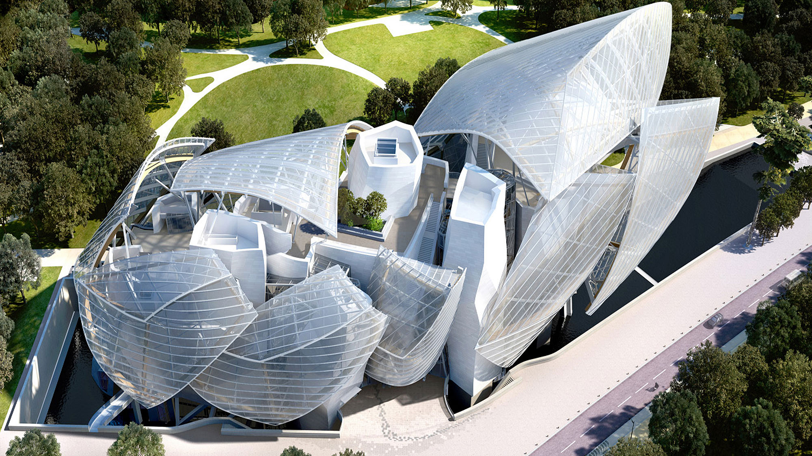
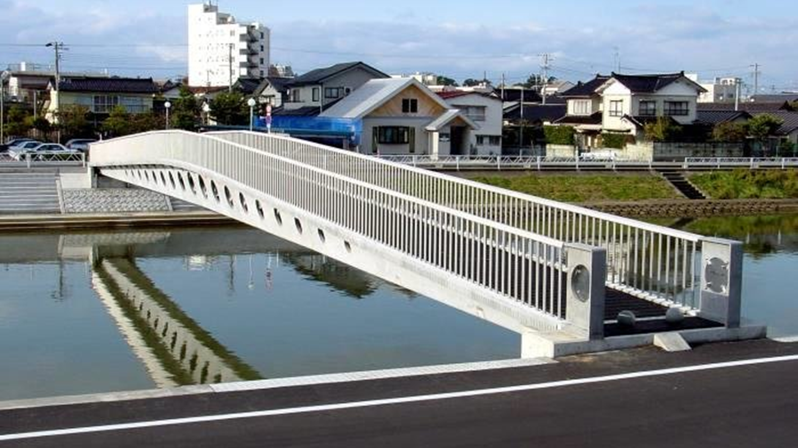
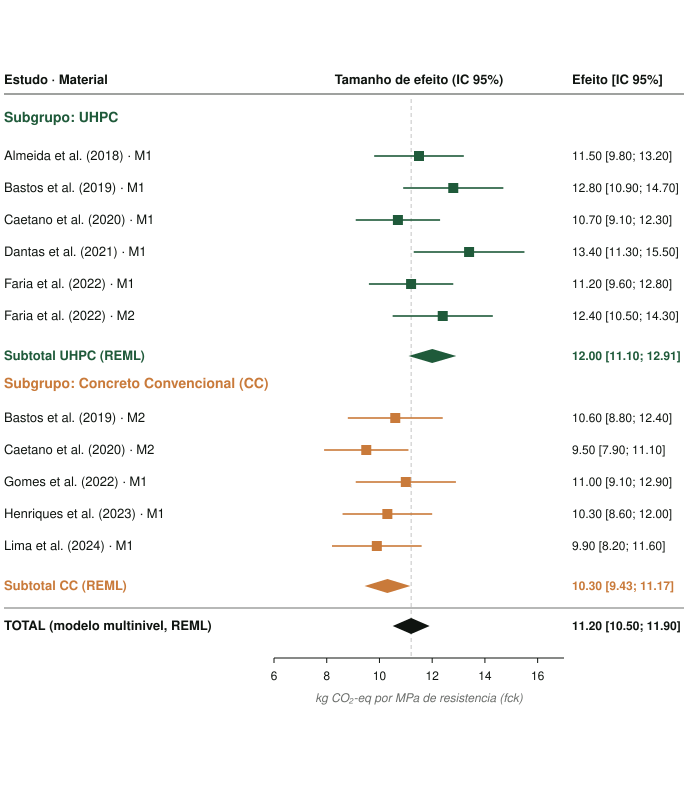
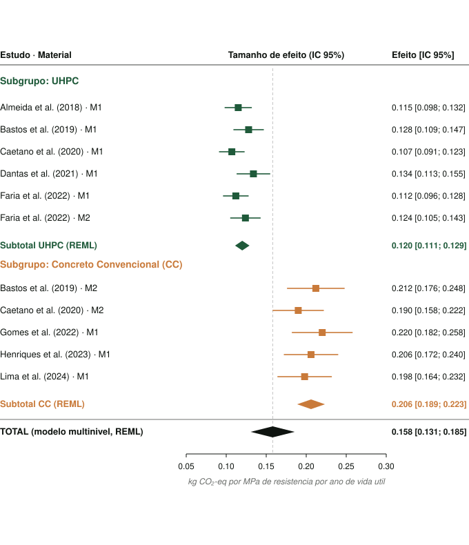

Total · identificados
5.093
Registros retornados pelas strings de busca nas sete bases.
Mapa desenvolvido no escopo desta pesquisa, cruzando dois recortes: jurisdições que formalmente declararam emergência climática e locais que sofreram eventos extremos atribuídos à mudança do clima, ainda que sem declaração formal.
![]()


Infraestrutura urbana com demanda por alta resistência: pontes, aeroportos, grandes edifícios.
Computar vida útil e transporte dentro do balanço de gases de efeito estufa.
Comparar UHPC com convencional e com HPC sob a mesma unidade funcional.
Esses três valores permitem calcular o índice de eco-eficiência de cada observação antes de combiná-las.
ConcluídoEm vez de tratar cada número isoladamente, o modelo separa a variação que vem de dentro de um artigo da variação entre artigos diferentes.
Em andamentoO índice cit (kg CO₂eq/MPa.a) permitirá comparar UHPC, HPC e concreto convencional numa métrica comum.
Em andamentoImpacto por volume (ou massa) de concreto produzido. Penaliza materiais densos em ligante — ignora desempenho mecânico e durabilidade.
Normaliza emissões pela resistência característica (fck) e pela vida útil. Captura o ganho que o UHPC traz à equação (Damineli et al., 2010).



O UHPC é um material cimentício que alcança resistência e durabilidade muito superiores ao concreto convencional. A ABNT NBR 17246-1:2025 classifica o UHPC em sete classes de resistência característica entre 100 e 250 MPa.
A força decorre de um traço otimizado com agregados ultrafinos, altas quantidades de cimento e pozolanas (sílica ativa), superplastificantes de última geração e relação água/aglomerante ~0,18. A dosagem preenche quase todos os vazios — matriz densa e quase impermeável.
Fibras de aço a ~2% em volume garantem ductilidade e fissuração controlada.



Confirmar (ou refutar) que o UHPC é alternativa sustentável ao concreto convencional em obras de infraestrutura urbana..
A alta resistência do UHPC pode se sobressair frente ao convencional e ao HPC — com potencial no mercado regulado de carbono.
Desfazer a ideia de que o UHPC só serve para casos específicos por causa do custo - cidades mais inteligentes, sustentáveis e longevas.


fib Congress 2026 · Fédération Internationale du Béton · Lisboa, Portugal.
Artigo em preparação · submissão prevista.